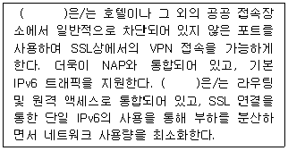
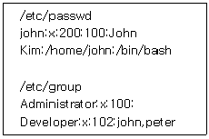

네트워크관리사-1급 (2016-10-09 기출문제)
1과목: TCP/IP
1. '10.0.0.0/8' 인 네트워크에서 115개의 서브넷을 만들기 위해 필요한 서브넷 마스크는?
- 255.0.0.0
- 255.128.0.0
- 255.224.0.0
- 255.254.0.0
(정답률: 51%)

2. IPv6로 넘어 오면서 기존의 TCP/IP 프로토콜이 통폐합되어 ICMPv6로 바뀌었다. 다음 중 IPv4에서 쓰이는 프로토콜 중 ICMPv6에 포함되지 않는 것은?
- RARP
- ICMP
- IGMP
- ARP
(정답률: 47%)
3. DNS에서 사용될 때 TTL(Time to Live)의 설명으로 올바른 것은?
- 데이터가 DNS서버 존으로부터 나오기 전에 현재 남은 시간이다.
- 데이터가 DNS서버 캐시로부터 나오기 전에 현재 남은 시간이다.
- 패킷이 DNS서버 존으로부터 나오기 전에 현재 남은 시간이다.
- 패킷이 DNS서버 네임서버 레코드로부터 나오기 전에 현재 남은 시간이다.
(정답률: 55%)
4. 각 주소를 나타내는 비트 크기가 옳게 표현된 것은?
- IPv6 > MAC 주소 > IPv4
- IPv6 > IPv4 > MAC 주소
- MAC 주소 > IPv6 > IPv4
- MAC 주소 > IPv4 > IPv6
(정답률: 73%)
5. C Class의 IP Address에 대한 설명으로 옳지 않은 것은?
- Network ID는 '192.0.0 ~ 223.255.255'이고, Host ID는 '1 ~ 254'이다.
- IP Address가 203.240.155.32 인 경우, Network ID는 203.240, Host ID는 155.32가 된다.
- 통신망의 관리자는 Host ID '0', '255'를 제외하고, 254개의 호스트를 구성할 수 있다.
- Host ID가 255일 때는 메시지가 네트워크 전체로 브로드 캐스트 된다.
(정답률: 73%)
6. IPv6 주소 체계의 종류로 옳지 않은 것은?
- Unicast 주소
- Anycast 주소
- Multicast 주소
- Broadcast 주소
(정답률: 75%)
7. IPv6에 대한 설명으로 옳지 않은 것은?
- 운영체제 등 많은 제품에서 IP 지원의 일부로서 포함되고 있다.
- 차세대 IP이다.
- IPv4 또는 IPv6를 채용하고 있는 호스트들은 둘 중 하나에 의해 형식화된 패킷만을 처리할 수 있다.
- 서비스 제공자들은 다른 측과 협조할 필요 없이 각기 독립적으로 IPv6로 갱신할 수 있다.
(정답률: 60%)
8. UDP에 대한 설명 중 올바른 것은?
- OSI 7 Layer에서 전송 계층에 속하며, 데이터그램 방식으로 비연결형이다.
- 인터넷상에서 전자우편(E-Mail)의 전송을 규정한다.
- 네트워크의 구성원에 패킷을 보내기 위한 하드웨어 주소를 정한다.
- 네트워크와 Application Layer 사이의 신뢰적 데이터 전송을 제공한다.
(정답률: 76%)
9. ICMP의 특징으로 옳지 않은 것은?
- IP 데이터그램의 데이터 영역에서 인터넷을 통과하여 이동한다.
- ICMP 메시지의 궁극적인 목적지는 응용프로그램이나 목적지 호스트에 있는 사용자가 아니다.
- ICMP 에러 메시지가 도착하면 ICMP 소프트웨어 모듈이 제어한다.
- ICMP는 라우터가 다른 라우터나 호스트에게 에러나 제어 메시지를 보내지 않는다.
(정답률: 59%)
10. DNS 메시지 헤더 형식에 대한 설명 중 옳지 않은 것은?
- ID : 질의를 일으키는 프로그램에 의해 할당되는 16비트 인식자
- QR : 메시지가 요구(1)인지 응답(0)인지를 나타내는 1비트 영역
- OPCODE : 공식적으로 나타난 질의의 유형에 대해 명시
- RA : 반복 질의를 수행하는 응답 네임 서버를 지정하는 1비트 영역
(정답률: 61%)
11. TFTP에 대한 설명으로 올바른 것은?
- TCP/IP 프로토콜에서 데이터의 전송 서비스를 규정한다.
- 인터넷상에서 전자우편(E-mail)의 전송을 규정한다.
- UDP 프로토콜을 사용하여 두 호스트 사이에 파일 전송을 가능하게 해준다.
- 네트워크의 구성원에 패킷을 보내기 위한 하드웨어 주소를 정한다.
(정답률: 66%)
12. TCP/IP 프로토콜 계층 구조에서 볼 때, 응용 계층에서 동작하는 프로토콜로 옳지 않은 것은?
- ICMP
- SMTP
- SNMP
- TFTP
(정답률: 71%)
13. IPv4의 헤더필드에 대한 설명으로 옳지 않은 것은?
- VER 필드는 IP프로토콜의 버전을 나타낸다.
- HLEN 필드는 헤더의 길이를 표시한다.
- Identification 필드는 수신 호스트에 의해 생성되는 유일한 식별자이다.
- Protocol 필드는 패킷이 전송되어져야 할 트랜스포트 프로토콜의 ID를 담는다.
(정답률: 47%)
14. OSPF 프로토콜이 최단경로 탐색에 사용하는 기본 알고리즘은?
- Bellman-Ford 알고리즘
- Dijkstra 알고리즘
- 거리 벡터 라우팅 알고리즘
- Floyd-Warshall 알고리즘
(정답률: 52%)
15. ARP Cache의 설명으로 옳지 않은 것은?
- 동적 항목과 정적 항목 모두를 관리한다.
- 동적 항목은 자동으로 추가되거나 삭제된다.
- 정적 항목은 컴퓨터를 다시 시작할 때까지 캐시에 남는다.
- 영구 항목으로서 로컬 서브넷에 대해 항상 하드웨어 브로드캐스트 주소를 관리한다. 이는 ARP 캐시를 볼 때 나타난다.
(정답률: 56%)
16. 하나의 서버는 서로 다른 서비스를 제공하고 있으며, 이 서비스는 포트라고 불리는 서로 다른 문을 통하여 제공된다. 서버가 일반적으로 사용하는 포트 번호(Well-Know Port Number)가 잘못 짝지어진 것은?
- FTP - 11
- SSH - 22
- Telnet - 23
- SMTP - 25
(정답률: 83%)
2과목: 네트워크 일반
17. SNMP에 대한 설명으로 옳지 않은 것은?
- TCP를 이용하여 신뢰성 있는 통신을 한다.
- 네트워크 관리를 위한 표준 프로토콜이다.
- 응용 계층 프로토콜이다.
- RFC 1157에 규정 되어 있다.
(정답률: 57%)
18. 주파수 분할 다중화 기법을 이용해 하나의 전송매체에 여러 개의 데이터 채널을 제공하는 전송방식은?
- 브로드밴드
- 내로우밴드
- 베이스밴드
- 하이퍼밴드
(정답률: 74%)
19. 오류 검출 방식인 ARQ 방식 중에서 일정한 크기 단위로 연속해서 프레임을 전송하고 수신측에 오류가 발견된 프레임에 대하여 재전송 요청이 있을 경우 잘못된 프레임만을 다시 전송하는 방법은?
- Stop-and-Wait ARQ
- Go-back-N ARQ
- Selective-repeat ARQ
- Adaptive ARQ
(정답률: 75%)
20. 데이터 전송과정에서 먼저 전송된 패킷이 나중에 도착되어 수신측 노드에서 패킷의 순서를 바르게 제어하는 방식은?
- 순서 제어
- 속도 제어
- 오류 제어
- 연결 제어
(정답률: 84%)
21. 정보 전송의 형태로 데이터 전송에 앞서 수신 시간을 얻도록 하는 방식으로, 송신측에서 동기부호를 사용하여 전송하는 방식은?
- 직렬 전송
- 병렬 전송
- 동기식 전송
- 비동기식 전송
(정답률: 78%)
22. 패킷 교환기의 기능으로 옳지 않은 것은?
- 경로 설정
- 수신된 패킷의 저장
- 전송되는 패킷의 변환
- 최종목적지 교환기의 순서제어
(정답률: 34%)
23. 물리계층의 역할이 아닌 것은?
- 전송매체를 통해서 시스템들을 물리적으로 연결한다.
- 자신에게 온 비트들이 순서대로 전송될 수 있도록 한다.
- 전송, 형식 및 운영에서의 에러를 검색한다.
- 물리적 연결과 동작으로 물리적 링크를 제어한다.
(정답률: 73%)
24. PCM 방식에서 아날로그 신호의 디지털 신호 생성 과정으로 올바른 것은?
- 아날로그신호 - 표본화 - 부호화 - 양자화 - 디지털신호
- 아날로그신호 - 표본화 - 양자화 - 부호화 - 디지털신호
- 아날로그신호 - 양자화 - 표본화 - 부호화 - 디지털신호
- 아날로그신호 - 양자화 - 부호화 - 표본화 - 디지털신호
(정답률: 74%)
25. 자료의 교환과정에서 컴퓨터 스스로 데이터 오류를 찾아내고 그 오류를 정정할 수 있는 코드로, 에러를 수정하기 위해 재전송 요구를 하기에는 너무 많은 전송 지체시간이 걸리는 원거리 장소로부터의 데이터 전송 시, 신뢰도를 높일 수 있는 것은?
- Hamming 코드
- ASCII 코드
- Excess-3 코드
- Block 코드
(정답률: 79%)
26. 데이터 링크 제어 프로토콜에 대한 일반적인 설명으로 옳지 않은 것은?
- BSC는 문자 위주 프로토콜이다.
- HDLC는 비트 위주 프로토콜이다.
- BSC 프로토콜에서 데이터 프레임은 헤더, 텍스트, 트레일러의 세 부분으로 구성된다.
- HDLC는 점 대 점 링크와 멀티 포인트 링크를 위하여 IBM사에서 개발하였다.
(정답률: 42%)
27. 컴퓨터 추가 설정이 용이하고, 중앙관리가 가능한 네트워크 토폴로지는?
- Bus
- Star
- Ring
- Mesh
(정답률: 79%)
3과목: NOS
28. SOA 레코드의 설정 값에 대한 설명으로 옳지 않은 것은?
- 주 서버 : 주 영역 서버의 도메인 주소를 입력한다.
- 책임자 : 책임자의 주소 및 전화번호를 입력한다
- 최소 TTL : 각 레코드의 기본 Cache 시간을 지정한다.
- 새로 고침 간격 : 주 서버와 보조 서버간의 통신이 두절되었을 때 다시 통신할 시간 간격을 설정한다.
(정답률: 69%)
29. Linux 시스템에서 사용되고 있는 메모리양과 사용 가능한 메모리 양, 공유 메모리와 가상 메모리에 대한 정보를 볼 수 있는 명령어는?
- mem
- free
- du
- cat
(정답률: 63%)
30. Linux 명령어 중 사용자 그룹을 생성하기 위해 사용되는 명령어는?
- groups
- mkgroup
- groupstart
- groupadd
(정답률: 67%)
31. Windows Server 2008 R2에서 파일 및 프린터 서버를 사용할 수 있도록 지원하기 위해서 반드시 설치해야 하는 통신 프로토콜은?
- TCP/IP
- SNMP
- SMTP
- IGMP
(정답률: 69%)
32. Windows Server 2008 R2의 Active Directory 서비스 중에서 디렉터리 데이터를 저장하고, 사용자 로그온 프로세스, 인증 및 디렉터리 검색을 포함하여 사용자와 도메인 간의 통신을 관리하는 서비스는?
- AD 인증서 서비스
- AD 도메인 서비스
- AD Federation 서비스
- AD Rights Management 서비스
(정답률: 55%)
33. Linux의 'vi' 명령어 중 변경된 내용을 저장한 후 종료하고자 할 때 사용해야 할 명령어는?
- :wq
- :q!
- :e!
- $
(정답률: 76%)
34. Linux 설치 시 Swap 영역에 대한 설명 중 옳지 않은 것은?
- RAM의 부족한 용량을 보충하기 위해 하드디스크의 일정부분을 지정하여 RAM처럼 사용한다.
- 일반적으로 실제 메모리의 두 배 정도면 적당하다.
- 시스템을 모니터링 한 결과 Swap이 많이 일어나면 메모리를 증설해야 한다.
- 한번 설정한 Swap은 추가가 불가능하므로 신중을 기해 크기를 결정해야 한다.
(정답률: 69%)
35. Windows Server 2008 R2의 이벤트 뷰어에서 확인할 수 있는 이벤트 헤더에 포함되지 않는 정보는?
- 날짜/시간
- 사용자
- 컴퓨터
- 성공 유무
(정답률: 37%)
36. Windows Server 2008 R2에서 성능 모니터 도구에 대한 설명으로 옳지 않은 것은?
- 성능 모니터에서는 성능 매개변수에 해당하는 선택된 카운터에 대해 통계정보를 보여준다.
- 리소스 모니터는 시스템의 4개 핵심 리소스를 대상으로 계속 카운터를 캡처해 보여준다.
- 안정성 모니터는 1부터 10까지의 안정성 인덱스를 이용해 시스템 안정성을 보여준다.
- 데이터 수집 집합기는 시스템의 성능에 영향을 미치는 일반 사용자들의 데이터를 보여준다.
(정답률: 52%)
37. 서버의 서비스, 네트워크보안, 레지스트리 값, 그리고 감사정책을 구성하기 위해 사용할 수 있는 보안정책에서 사용하는 파일로 올바른 것은?
- .xml
- .mdb
- .exe
- .html
(정답률: 61%)
38. Windows Server 2008 R2에서 파일에 대한 암호화가 가능한 파일시스템은?
- NFS
- FAT32
- FAT
- NTFS
(정답률: 65%)
39. Windows Server 2008 R2에서 클라이언트와 서버 간 또는 서버와 또다른 서버간의 인증 및 상호 인증을 제공하는 인증 프로토콜임과 동시에 일종의 키분배센터(KDC)에 해당하며, 버전 5로 구현되어 있는 것은?
- NTLM
- Kerberos
- PKU2U
- TLS/SSL
(정답률: 68%)
40. 다음 중 ( )에 알맞은 것은?

- RADIUS
- PPTP
- L2TP
- SSTP
(정답률: 62%)
41. Windows Server 2008 R2 운영 시 보안을 위한 조치로 적절하지 않은 것은?
- 가급적 서버의 서비스들을 많이 활성화시켜 둔다.
- 비즈니스 자원과 서비스를 분리한다.
- 사용자에게는 임무를 수행할 만큼의 최소 권한만 부여한다.
- 변경사항을 적용하기 전에 정책을 가지고 검사한다.
(정답률: 84%)
42. Windows Server 2008 R2의 로컬보안정책의 세부메뉴에 공개키 정책이 있다. 다음 중에서 공개키 암호화의 특징이 아닌 것은?
- 대칭키 암호화 방식이다.
- 비대칭키 암호화 방식이다.
- 각 개인은 개인키를 가지게 된다.
- 복잡한 키 알고리즘을 가진다.
(정답률: 63%)
43. Windows Server 2008 R2의 방화벽은 ( ) 명령을 사용하여 명령줄로부터 관리할 수 있다. 괄호에 알맞은 것은?
- netsh
- Diskraid
- Auditpol
- Diskpart
(정답률: 68%)
44. 리눅스서버에 도메인네임서버를 위한 BIND Package가 설치되어 있는지 세부적으로 확인하는 명령어는?
- rpm -qa | grep bind
- rpm -qa | grep named
- rpm -confirm | grep bind
- rpm -confirm | grep named
(정답률: 61%)
45. Linux에서 'ifconfig'를 사용하여 네트워크 인터페이스 카드를 동작시키려고 한다. 명령어에 대한 사용이 올바른 것은?
- ifconfig 192.168.2.4 down
- ifconfig eth0 192.168.2.4 up
- ifconfig -up eth0 192.168.2.4
- ifconfig up eth0 192.168.2.4
(정답률: 63%)
4과목: 네트워크 운용기기
46. RAID의 구성에서 미러링모드 구성이라고도 하며 디스크에 있는 모든 데이터는 동시에 다른 디스크에도 백업되어 하나의 디스크가 손상되어도 다른 디스크의 데이터를 사용할 수 있게 한 RAID 구성은?
- RAID 0
- RAID 1
- RAID 2
- RAID 3
(정답률: 70%)
47. 라우터에서 'show running-config' 란 명령어로 내용을 확인할 수 있는 곳은?
- ROM
- RAM
- NVRAM
- FLASH
(정답률: 63%)
48. 스위치 허브(Switch Hub)에 대한 설명 중 옳지 않은 것은?
- 네트워크 관리가 용이하다.
- 네트워크 확장이 용이하다.
- 포트 당 일정한 속도를 보장해 준다.
- 스위치 허브에 연결된 사용자가 많을수록 전송속도는 향상된다.
(정답률: 78%)
49. 라우터가 패킷의 목적지를 결정하는 방법은?
- 출발지 IP Address를 검사한다.
- MAC 주소를 검사한다.
- BDC 주소를 검사한다.
- 목적지 IP Address를 검사한다.
(정답률: 71%)
50. 리피터(Repeater)에 대한 설명으로 올바른 것은?
- 콜리젼 도메인(Collision Domain)을 나누어 주는 역할을 한다.
- 필터링과 포워딩 기능을 수행한다.
- 전송거리 연장을 위한 장비이다.
- 브로드캐스트 도메인(Broadcast Domain)을 나누어 주는 역할을 한다.
(정답률: 72%)
5과목: 정보보호개론
51. Apache 웹 서버 로그에서 확인 할 수 없는 정보는?
- 클라이언트의 IP Address
- 클라이언트의 요청 페이지
- 클라이언트의 접속 시도 날짜
- 클라이언트의 게시판 입력 내용
(정답률: 78%)
52. 대칭키 암호 알고리즘 SEED에 대한 설명으로 올바른 것은?
- 국제적 컨소시움에서 개발하였다.
- SPN 구조로 이루어져 있다.
- 20 라운드를 거쳐 보안성을 높였다.
- 20⑤년 ISO/IEC 국제 블록암호알고리즘 표준으로 제정되었다.
(정답률: 57%)
53. 'Brute Force' 공격에 대한 설명으로 올바른 것은?
- 암호문을 풀기 위해 모든 가능한 암호 키 조합을 적용해 보는 시도이다.
- 대량의 트래픽을 유발해 네트워크 대역폭을 점유하는 형태의 공격이다.
- 네트워크상의 패킷을 가로채 내용을 분석해 정보를 알아내는 행위이다.
- 공개 소프트웨어를 통해 다른 사람의 컴퓨터에 침입하여 개인정보를 빼내는 행위이다
(정답률: 58%)
54. S-HTTP와 SSL에 대한 설명으로 옳지 않은 것은?
- SSL은 잘 알려진 보안 프로토콜인 S-HTTP의 대안으로 제시되었다.
- SSL에서는 전자서명과 키 교환을 위해 RSA 방식을 이용한다.
- SSL은 보안기능을 강화하기 위하여 Server 인증, Message의 신뢰성, 무결성을 지원하고 있다.
- SSL은 주고받는 메시지를 암호화하고 그것을 해독하는 기능을 한다.
(정답률: 54%)
55. 비밀키 암호화 기법에 대한 설명으로 옳지 않은 것은?
- 두 사람이 동일한 키를 소유해야 한다.
- 암호화 알고리즘은 간단하고 편리하지만 키를 관리하기가 어렵다.
- 공개키 암호화 방식에 비해 필요한 키의 수가 적으므로, 전자서명에서도 상대적으로 간단하고 효율적인 시스템을 구축하는 것이 가능하다.
- 키는 각 메시지를 암호화하고 복호화 할 수 있도록 전달자에 의해 공유될 수 있다.
(정답률: 54%)
56. 방화벽(Firewall)에 대한 설명으로 옳지 않은 것은?
- 네트워크 출입로를 다중화하여 시스템의 가용성을 향상 시킨다.
- 외부로부터 불법적인 침입이나 내부로부터의 불법적인 정보 유출을 방지하는 기능을 담당한다.
- 외부로부터의 공격을 막는 역할만해서, 내부에서 행해지는 해킹 행위에는 방화벽 기능이 사용되지 못할 수도 있다.
- 방화벽에는 역 추적 기능이 있어, 외부에서 네트워크에 접근 시, 그 흔적을 찾아 역추적이 가능하다.
(정답률: 64%)
57. LINUX 시스템에서 패스워드의 유효 기간을 정하는데 사용될 수 없는 방법은?
- '/etc/login.defs' 의 설정을 사용자 account 생성 시 지정
- chown 명령을 활용하여 지정
- '/etc/default/useradd' 파일의 설정을 account 생성 시 지정
- change 명령을 활용하여 지정
(정답률: 63%)
58. 전자우편 보안기술 중 PEM(Privacy-enhanced Electronic Mail)에 대한 설명으로 옳지 않은 것은?
- MIME(Multipurpose Internet Mail Extension)를 확장해서 전자 우편 본체에 대한 암호 처리와 전자 우편에 첨부하는 전자 서명을 제공한다.
- 프라이버시 향상 이메일이라는 뜻으로, 인터넷에서 사용되는 이메일 보안이다.
- 보안 능력이 우수하고, 중앙집중식 인증 체계로 구현된다.
- 비밀성, 메시지 무결성, 사용자 인증, 발신자 부인 방지, 수신자 부인 방지, 메시지 반복 공격 방지 등의 기능을 지원한다.
(정답률: 57%)
59. 다음은 ‘/etc/passwd’ 파일의 내용과 ‘/etc/group’ 파일의 내용 일부 이다. 이에 대한 설명으로 적절한 것은?

- john의 그룹 ID는 200 이다.
- john은 Developer 그룹을 주그룹으로 갖는다.
- peter는 john과 함께 Developer Group에 속한다.
- peter와 john은 모든 파일들에 대해서 같은 권한을 갖는다.
(정답률: 68%)
60. Linux의 서비스 포트 설정과 관련된 것은?
- /etc/services
- /etc/pam.d
- /etc/rc5.d
- /etc/service.conf
(정답률: 67%)